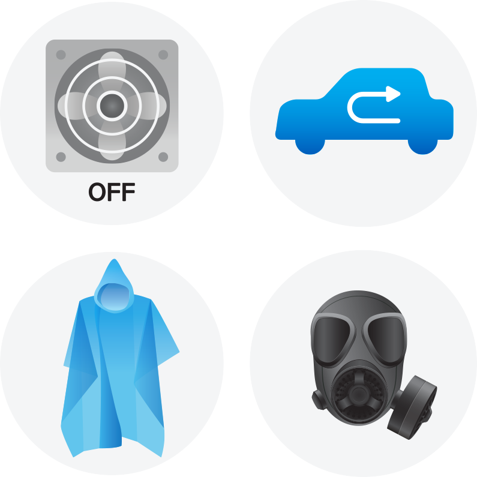

에어컨 및 모든 환기 장치를 끕니다. 차량으로 이동할 때도 창문을 꼭 닫고, 실외 공기가 유입되지 않게 합니다.
밖에 나갈 때는 비옷을 입어 오염 물질이 몸에 닿지 않게 하고, 방사능 먼지를 흡입하지 않도록 반드시 방진 마스크를 써야 합니다.
방사능 먼지가 눈에 들어가지 않도록 얼굴 전체를 덮는 가스 마스크, 또는 방진 마스크와 고글을 착용합니다.
오염 물질과의 접촉을 최대한 차단해야 합니다. 비옷에 벌어진 틈새가 없게 꼭 여미고 장갑을 낍니다.
비옷과 장갑은 1회용으로 사용하고 비닐봉지에 밀봉해 버려야 합니다. 외출 후 벗은 옷은 탈탈 털지 말고 즉시 세탁해 실내에서 건조시킵니다.